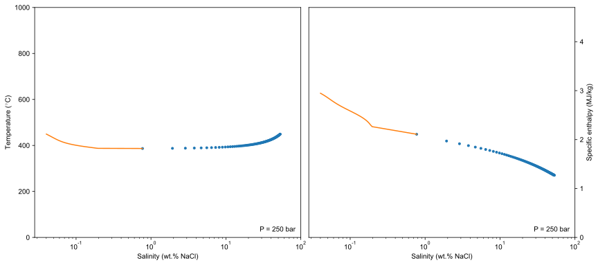
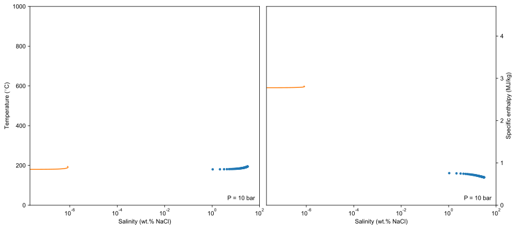

Note
Click here to download the full example code
0. Phase diagram
Calculate and plot phase diagram.
Python code
import os
import numpy as np
import time
import linecache
import matplotlib.pyplot as plt
import matplotlib as mpl
from matplotlib import patches
import matplotlib.ticker as ticker
from matplotlib.ticker import MultipleLocator
from tabulate import tabulate
from matplotlib.patches import Patch
import copy
import warnings
warnings.filterwarnings("ignore", category=RuntimeWarning)
# 3d plot
import helpfunc
mpl.rcParams['font.family'] = 'Arial' # default font family
mpl.rcParams['mathtext.fontset'] = 'cm' # font for math
dpi=100
fmt_figs = ['pdf'] # ['svg','pdf']
figpath = '.'
result_path='../../../gallery_H2ONaCl/pT'
def savefig(figname):
for fmt_fig in fmt_figs:
figname_full = '%s/%s.%s' % (figpath, figname, fmt_fig)
plt.savefig(figname_full, bbox_inches='tight',dpi=dpi)
print('figure saved: ', figname_full)
compare = lambda a,b : float(str('%.6e'%(a)))-float(str('%.6e'%(b)))
# Import package of xThermo
from xThermo import H2O
from xThermo import NaCl
from xThermo import H2ONaCl
sw_84 = H2ONaCl.cH2ONaCl("IAPS84")
sw_95 = H2ONaCl.cH2ONaCl("IAPWS95")
def calc_VLH(sw,xcenter,phaseBoundaries,nT=100):
# calculate boundary surface of VLH: Vapor -> liquid part , and Liquid -> Halite part
nT_high = int(nT/3)
nT_low=nT - nT_high
T_high=H2ONaCl.T_MIN_VLH + (sw.Tmax_VLH() - H2ONaCl.T_MIN_VLH)*0.95
T = np.append(np.linspace(H2ONaCl.T_MIN_VLH, T_high, nT_low),np.linspace(T_high, sw.Tmax_VLH(),nT_high))
P_vlh = np.array(sw.P_VLH(T))
Xl_vlh, Xv_vlh = np.array(sw.X_VLH(T,P_vlh))
n_log,n_linear=20,40
X = np.linspace(H2ONaCl.X_MIN, H2ONaCl.X_MAX, n_log+n_linear)
TT,PP = np.meshgrid(T, X)
XX_V2L,XX_L2H=np.zeros_like(TT),np.zeros_like(TT)
for i in range(0,PP.shape[0]):
PP[i,:]=P_vlh
# 1. vapor -> liquid region
for j in range(0,PP.shape[1]):
XX_V2L[:,j] = np.append(10**np.linspace(np.log10(Xv_vlh[j]),np.log10(xcenter/100),n_log), np.linspace(xcenter/100,Xl_vlh[j],n_linear))
# 2. liquid -> halite region
for j in range(0,PP.shape[1]):
XX_L2H[:,j] = np.linspace(Xl_vlh[j], 1,len(X))
# assemble data
phaseBoundaries['surface']['VLH: vapor -> liquid']={'T':TT,'P':PP,'X':XX_V2L,'fc':'darkblue','ec':'darkblue'} # surface
phaseBoundaries['surface']['VLH: liquid -> halite']={'T':TT,'P':PP,'X':XX_L2H,'fc':'orange','ec':'orange'} # surface
phaseBoundaries['line']['VLH: vapor']={'T': T, 'P':P_vlh, 'X': Xv_vlh,'lc':'r','zorder':None} # line
phaseBoundaries['line']['VLH: liquid']={'T': T, 'P':P_vlh, 'X': Xl_vlh,'lc':'g','zorder':None} # line
phaseBoundaries['line']['VLH: halite']={'T': T, 'P':P_vlh, 'X': Xl_vlh*0 + 1,'lc':'k','zorder':None} # line
return phaseBoundaries
def calc_VH(sw,phaseBoundaries,nT=100, nP = 100):
T = np.linspace(H2ONaCl.T_MIN_VLH, sw.Tmax_VLH(), nT)
P_vlh = np.array(sw.P_VLH(T))
P = np.linspace(0,1,nP)
TT,PP = np.meshgrid(T,P)
np_low = int(nP/3)
np_high=nP - np_low
for i in range(0,len(T)):
p_low=sw.pmin() + (P_vlh[i] - sw.pmin())*0.1
PP[:,i] = np.append(np.linspace(sw.pmin(),p_low,np_low),np.linspace(p_low,P_vlh[i],np_high))
XX_VH = np.array(sw.X_VH(TT.reshape(-1,),PP.reshape(-1,))).reshape(TT.shape)
phaseBoundaries['surface']['VH: vapor']={'T':TT,'P':PP,'X':XX_VH,'fc':'purple','ec':'purple'} # surface
phaseBoundaries['line']['VH: vapor(P=Pmin)']={'T': T, 'P':P_vlh*0 + sw.pmin(), 'X': XX_VH[0,:],'lc':'b','zorder':None} # line
return phaseBoundaries
def calc_HaliteLiquidus(sw,phaseBoundaries, pmax=2500E5,nT=100,nP=100):
T = np.linspace(H2ONaCl.T_MIN_VLH, sw.Tmax_VLH(), nT)
P_vlh = np.array(sw.P_VLH(T))
P = np.linspace(0,1,nP)
TT,PP = np.meshgrid(T,P)
for i in range(0,len(T)):
PP[:,i] = np.linspace(P_vlh[i],pmax,nP)
XL_LH = np.array(sw.X_HaliteLiquidus(TT.reshape(-1,),PP.reshape(-1,))).reshape(TT.shape)
phaseBoundaries['surface']['Halite liquidus']={'T':TT,'P':PP,'X':XL_LH,'fc':'lime','ec':'lime'} # surface
return phaseBoundaries
def calc_VL(sw, phaseBoundaries):
for phase,color,name in zip([H2ONaCl.Liquid, H2ONaCl.Vapor],['k','gray'],['VL: liquid branch','VL: vapor branch']):
pb = sw.PhaseBoundary_VL_DeformLinear(phase)
TT,PP,XX = np.array(pb.T), np.array(pb.p), np.array(pb.X)
phaseBoundaries['surface'][name]={'T':TT,'P':PP,'X':XX,'fc':color,'ec':color} # surface
# critical curve
T_crit = np.linspace(sw.get_pWater().T_critical(),sw.Tmax(),100)
p_crit, X_crit = np.array(sw.P_X_Critical(T_crit))
phaseBoundaries['line']['Critical curve']={'T': T_crit, 'P':p_crit, 'X': X_crit,'lc':'r','zorder':11} # line
return phaseBoundaries
def calc_phaseBoundaries(sw,xcenter=1):
# xcenter=1 # X<1% wt.% use log scale, if X>=1% wt.% NaCl, use linear scale
phaseBoundaries={'xcenter':xcenter,'surface':{},'line':{}} #T: K, P: Pa, X: kg/kg
# 1.1 VLH surface
phaseBoundaries = calc_VLH(sw,xcenter,phaseBoundaries)
# 1.2 VH surface
phaseBoundaries = calc_VH(sw,phaseBoundaries)
# 1.3 LH surface: halite liquidus
phaseBoundaries = calc_HaliteLiquidus(sw, phaseBoundaries)
# 1.4 VL:
phaseBoundaries = calc_VL(sw, phaseBoundaries)
return phaseBoundaries
def plot_3d(sw,phaseBoundaries,scale='linear'):
fig=plt.figure(figsize=(14,14))
ax = fig.add_subplot(111,projection='3d',facecolor='None')
xcenter=phaseBoundaries['xcenter'] # xcenter = 1, X<1% wt.% use log scale, if X>=1% wt.% NaCl, use linear scale
axtrans=[]
if(scale=='loglinear'):
axtrans=helpfunc.set_axis_diagram_3D_loglinearx(ax,xcenter=xcenter,ratio_log_lin=(1,1),xMajor_loc_log=2,xMajor_loc_linear=10,xMinor_loc_linear=2,xlim=(1E-16,100),xlabel='log$_{\mathregular{10}}$(Wt.% NaCl)')
else:
helpfunc.set_axis_diagram_3D(ax)
transform_X = lambda X : helpfunc.data2axis_loglin(axtrans,X) if(scale=='loglinear') else X
# plot
surfaces=phaseBoundaries['surface']
for key in surfaces.keys():
X,T,P,fc,ec = transform_X(surfaces[key]['X']*100),surfaces[key]['T']-273.15,surfaces[key]['P']/1E5,surfaces[key]['fc'],surfaces[key]['ec']
ax.plot_surface(X,T,P,color=fc,alpha=0.5)
ax.plot_wireframe(X,T,P,ec=ec,lw=0.8,label=key)
lines=phaseBoundaries['line']
for key in lines.keys():
X,T,P,lc = transform_X(lines[key]['X']*100),lines[key]['T']-273.15,lines[key]['P']/1E5,lines[key]['lc']
ax.plot(X,T,P,color=lc,label=key,zorder=lines[key]['zorder'])
# legend
leg=ax.legend()
# change legend handle of wireframe of phase boundaries to wireframe hatch
for i in range(0,6):
leg.legendHandles[i]=Patch(facecolor='white', edgecolor=leg.legendHandles[i]._color,linewidth=0.0,label=leg.texts[i]._text,hatch='++++')
ax.legend(handles=leg.legendHandles, loc='upper left',ncol=7)
# text
if(scale=='loglinear'): helpfunc.text3d(ax,(transform_X(1E-12),800,sw.pmin()/1E5),"P$_{min}$=%.0f bar"%(sw.pmin()/1E5),size=0.07,angle=-90,ec='None',fc='k')
ax.view_init(elev=25, azim=-145)
savefig('PhaseDiagram_%s'%(scale))
def writeXXYYZZ2vtu(XX,YY,ZZ,vtufile,scale_x=1, scale_y=1, scale_z=1):
x,y,z = XX.reshape(-1,)*scale_x, YY.reshape(-1,)*scale_y, ZZ.reshape(-1,)*scale_z
npoints=len(x)
nCells=(XX.shape[0]-1)*(XX.shape[1]-1)
VTK_CELLTYPE=9 #四边形
np_per_cell=4
nrows,ncols = XX.shape[0],XX.shape[1]
# write vtu
fpout=open(vtufile,'w')
fpout.write('<VTKFile type="UnstructuredGrid" version="1.0" byte_order="LittleEndian" header_type="UInt64">\n')
fpout.write(' <UnstructuredGrid>\n')
fpout.write(' <Piece NumberOfPoints="%.0f" NumberOfCells="%.0f">\n'%(npoints,nCells))
fpout.write(' <PointData>\n')
# fpout.write(' <DataArray type="Float64" Name="%s" format="ascii">\n'%(dataname))
# fpout.write(' ')
# for i in range(0,len(data)):
# fpout.write('%f '%(data[i]))
# fpout.write('\n </DataArray>\n')
fpout.write(' </PointData>\n')
fpout.write(' <CellData>\n')
fpout.write(' </CellData>\n')
fpout.write(' <Points>\n')
fpout.write(' <DataArray type="Float32" Name="Points" NumberOfComponents="3" format="ascii">\n')
for i in range(0,len(x)):
fpout.write(' %f %f %f\n'% (x[i],y[i],z[i]))
fpout.write(' </DataArray>\n')
fpout.write(' </Points>\n')
fpout.write(' <Cells>\n')
fpout.write(' <DataArray type="Int64" Name="connectivity" format="ascii">\n')
for nrow in range(0,nrows-1):
for ncol in range(0,ncols-1):
LL=ncol + nrow*ncols
fpout.write(' %.0f %.0f %.0f %.0f\n'%(LL, LL+1, LL+1+ncols, LL+ncols))
fpout.write(' </DataArray>\n')
fpout.write(' <DataArray type="Int64" Name="offsets" format="ascii">\n')
fpout.write(' ')
for i in range(0,nCells):
fpout.write('%.0f '%((i+1)*np_per_cell))
fpout.write(' </DataArray>\n')
fpout.write(' <DataArray type="UInt8" Name="types" format="ascii">\n')
fpout.write(' ')
for i in range(0,nCells):
fpout.write('%.0f '%(VTK_CELLTYPE))
fpout.write(' </DataArray>\n')
fpout.write(' </Cells>\n')
fpout.write(' </Piece>\n')
fpout.write(' </UnstructuredGrid>\n')
fpout.write('</VTKFile>\n')
fpout.close()
# os.system('meshio-binary '+vtufile)
# # delete tmp files
# os.system('rm %s %s'%(fname_xyz,fname_utm_xyz))
def phaseBoundaries2VTK(phaseBoundaries,fname,scale='linear',Xmin=0,Xmax=100,Tmin=90,Tmax=1000,Pmin=1,Pmax=2500,scale_X=1):
ratio_log_lin=(1,1)
axtrans = {'xlim':(1e-14,100),'xcenter':phaseBoundaries['xcenter'],'ratio_log_lin':ratio_log_lin}
if(scale=='loglinear'): Xmin, Xmax = -ratio_log_lin[0]/ratio_log_lin[1],1
# normalize
Normalize_X = lambda X : (helpfunc.data2axis_loglin(axtrans,X) - Xmin)/(Xmax-Xmin) if(scale=='loglinear') else (X-Xmin)/(Xmax-Xmin)
Normalize_T = lambda T: (T-Tmin)/(Tmax-Tmin)
Normalize_P = lambda P: (P-Pmin)/(Pmax-Pmin)
# save phase boundaries surfaces and lines to vtk format: .vtm file
abspath = os.path.dirname(os.path.abspath(fname))
basename = os.path.basename(fname).split('.')[0]
# save a vtm file
vtmfile = '%s/%s_%s.vtm'%(abspath,basename,scale)
fpout = open(vtmfile,'w')
fpout.write('<VTKFile type="vtkMultiBlockDataSet" version="1.0" byte_order="LittleEndian" header_type="UInt64">\n')
fpout.write(' <vtkMultiBlockDataSet>\n')
surfaces=phaseBoundaries['surface']
for i,key in enumerate(surfaces.keys()):
vtufile = '%s/%s_%s_%s.vtu'%(abspath,basename,key.replace(' ','_').replace(':','').replace('->','-'),scale)
XX,YY,ZZ = Normalize_X(surfaces[key]['X']*100),Normalize_T(surfaces[key]['T']-273.15),Normalize_P(surfaces[key]['P']/1E5)
writeXXYYZZ2vtu(XX,YY,ZZ,vtufile,scale_x=scale_X)
fpout.write(' <Block index="%d" name="%s">\n'%(i,key))
fpout.write(' <DataSet index="0" name="1" file="%s">\n'%(vtufile))
fpout.write(' </DataSet>\n')
fpout.write(' </Block>\n')
fpout.write(' </vtkMultiBlockDataSet>\n')
fpout.write('</VTKFile>')
fpout.close()
def createPhaseBoundaries_vtkjs(sw):
for scale,xscale in zip(['linear','log','loglinear'],[1,2,2]):
os.system('mkdir ../../../gallery_H2ONaCl/pT/phaseBoundaries_%s'%(scale))
pb = sw.calc_PhaseBoundaries(scale,1, 0.1)
sw.normalizePhaseBoundaries(pb)
sw.writePhaseBoundaries2VTU("../../../gallery_H2ONaCl/pT/phaseBoundaries_%s"%(scale), pb, 1, 2, xscale)
General 3D view: linear scale (left panel) and log-linear scale (right panel)
The VH surface connect to the Vapor side of VLH surface which can be calculated by function Xl_vlh, Xv_vlh = V_VLH(T, P)
Python code
phaseBoundaries = calc_phaseBoundaries(sw_84)
phaseBoundaries2VTK(phaseBoundaries,'pb.vtu',scale='linear')
phaseBoundaries2VTK(phaseBoundaries,'pb.vtu',scale='loglinear',scale_X=2)
plot_3d(sw_84,phaseBoundaries,scale='linear')
plot_3d(sw_84,phaseBoundaries,scale='loglinear')
createPhaseBoundaries_vtkjs(sw_84)


Out:
figure saved: ./PhaseDiagram_linear.pdf
figure saved: ./PhaseDiagram_loglinear.pdf
Interactive scene based on VTK.js
Halite Liquidus , VL: liquid branch , VL: vapor branch , VLH , Halite saturated vapor , VLH: vapor , VLH: liquid , VLH: halite , Critical curve , Boiling curve of H2O
Isobaric sections
Python code
def phaseBoundary_isobaric(sw,p0):
T_crit = sw.T_Critical(p0)
Tmin_vlh, Tmax_vlh = sw.T_VLH_P0(p0)
T=np.linspace(T_crit, Tmin_vlh, 100)
P = T*0 + p0
# VL
xl=np.array(sw.XL_VL(T, P))
xv=np.array(sw.XV_VL(T, P))
hl=np.array(sw.H_phase(T,P,xl, H2ONaCl.Liquid))
hv=np.array(sw.H_phase(T,P,xv, H2ONaCl.Vapor))
# plot
fig,axes=plt.subplots(1,2, figsize=(14,6),gridspec_kw={'wspace':0.03})
for ax,y in zip(axes, [[T-273.15,T-273.15],[hl/1E6,hv/1E6]]):
ax.plot(xl*100, y[0], '.')
ax.plot(xv*100, y[1])
ax.set_xscale('log')
ax.set_xlim(ax.get_xlim()[0],100)
ax.text(0.98,0.02,'P = %.0f bar'%(p0/1E5),transform=ax.transAxes, ha='right',va='bottom')
ax.set_xlabel('Salinity (wt.% NaCl)')
axes[1].yaxis.set_ticks_position('right')
axes[1].yaxis.set_label_position('right')
axes[0].set_ylabel('Temperature ($^{\circ}$C)')
axes[1].set_ylabel('Specific enthalpy (MJ/kg)')
axes[0].set_ylim(0,1000)
axes[1].set_ylim(0,4.7)
savefig('Isobaric_%.0f'%(p0/1E5))
phaseBoundary_isobaric(sw_84,250E5)
phaseBoundary_isobaric(sw_84,10E5)
- 
- 
Out:
figure saved: ./Isobaric_250.pdf
figure saved: ./Isobaric_10.pdf
Total running time of the script: ( 0 minutes 48.437 seconds)